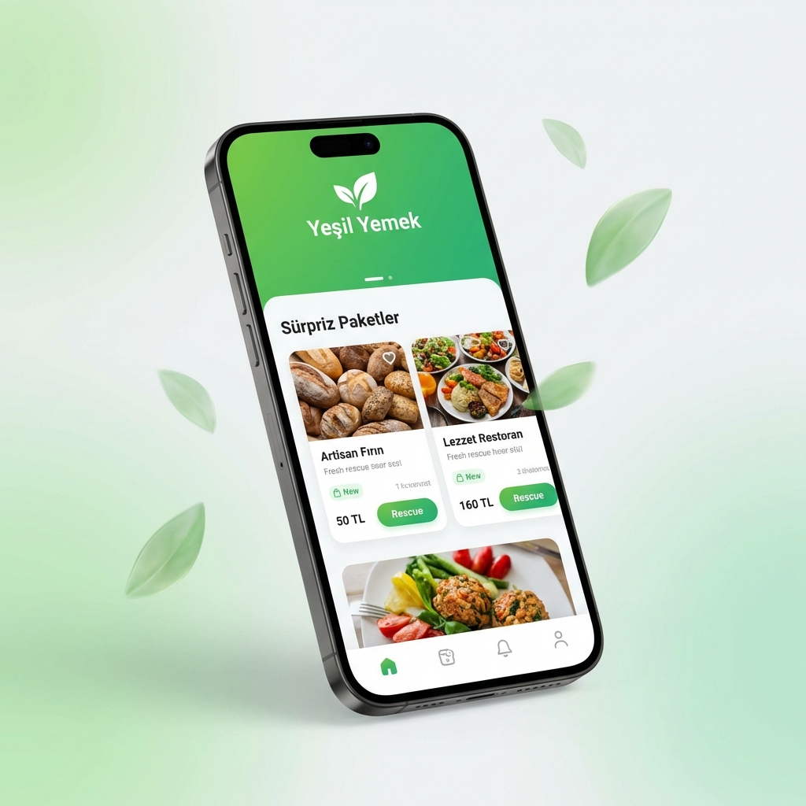

Gıda İsrafını Lezzete Dönüştürün
Turn Food Waste Into Flavor
Favori mekanlarınızın günlük taze ve lezzetli ürünlerini %70'e varan indirimlerle kurtarın. Hem doğayı koruyun hem de bütçenizi.
Rescue fresh and delicious daily products from your favorite venues with discounts up to 70%. Save the planet and your budget.
